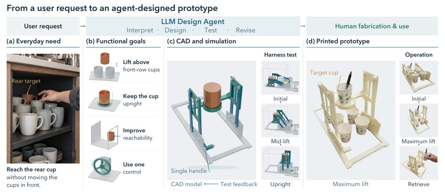

Can It Actually Work? Synthesizing Functional CAD Mechanisms
arXiv preprint, 2026
A coding agent turns a vague request into CAD; FunCAD-Harness converts each functional requirement into a physics test for that specific design and sends the results back. FunCADBench covers 46 mechanism families, and some designs were 3D-printed to check them in the real world.